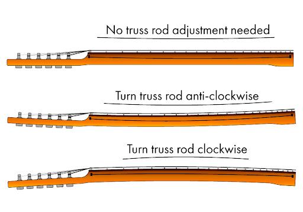
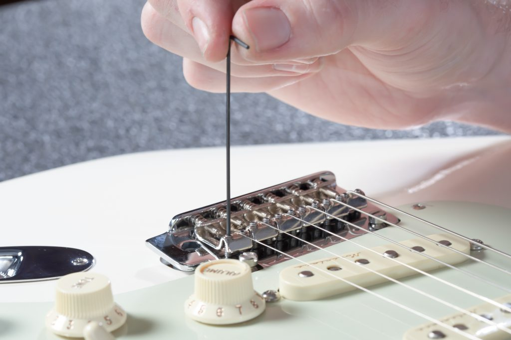
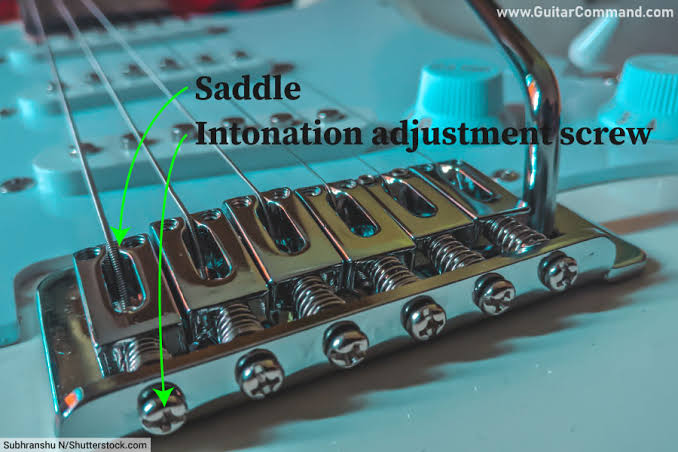

1. Atur Kelurusan Neck (Truss Rod Adjustment)

Ilustrasi posisi dan arah putar truss rod.Cek kelurusan neck dengan menekan senar di fret 1 dan fret terakhir secara bersamaan. Perhatikan celah di sekitar fret tengah (fret 7-9).
⚙️ PANDUAN ARAH PUTARAN:
• Kalau Neck Melengkung (Bow / Cembung):
Putar SEARAH JARUM JAM (Clockwise)
👉 Hasil: Neck jadi lurus / senar turun.
Putar SEARAH JARUM JAM (Clockwise)
👉 Hasil: Neck jadi lurus / senar turun.
• Kalau Senar Terlalu Nempel (Backbow):
Putar BERLAWANAN ARAH (Counter-Clockwise)
👉 Hasil: Nambah celah / ngurangin buzzing.
Putar BERLAWANAN ARAH (Counter-Clockwise)
👉 Hasil: Nambah celah / ngurangin buzzing.
⚠️ Catatan: Putar pelan-pelan (maksimal seperempat putaran sekali cek), jangan dipaksa kalau keras!
2. Penyesuaian Action (Ketinggian Senar di Bridge)

Ilustrasi tinggi rendah saddle bridge.Sesuaikan tinggi saddle di bridge menggunakan kunci L kecil atau obeng kecil (tergantung jenis bridge). Perhatikan juga radius fretboard gitar ya, senar harus menyesuaikan radius fretboard agar nyaman dimainkan.
🎸 PANDUAN TINGGI SENAR (ACTION):
• Ingin Senar Lebih Rendah (Low Action):
Putar baut saddle ke BAWAH / SEARAH JARUM JAM.
👉 Jari lebih empuk, tapi awas fret buzz.
Putar baut saddle ke BAWAH / SEARAH JARUM JAM.
👉 Jari lebih empuk, tapi awas fret buzz.
• Ingin Senar Lebih Tinggi (High Action):
Putar baut saddle ke ATAS / BERLAWANAN.
👉 Suara bersih, tapi jari agak pegal.
Putar baut saddle ke ATAS / BERLAWANAN.
👉 Suara bersih, tapi jari agak pegal.
3. Intonasi (Octave Tuning)

Ilustrasi pergerakan saddle intonasi.Cek nada senar lepas (open string) vs nada saat ditekan di fret 12 pakai tuner digital.
🎯 PANDUAN GESER SADDLE INTONASI:
• Fret 12 Terlalu Tajam (Kepanjangan Nada):
Geser saddle ke BELAKANG (jauhi neck).
👉 Panjang senar ditambah.
Geser saddle ke BELAKANG (jauhi neck).
👉 Panjang senar ditambah.
• Fret 12 Terlalu Datar (Kekurangan Nada):
Geser saddle ke DEPAN (mendekati neck).
👉 Panjang senar dikurangi.
Geser saddle ke DEPAN (mendekati neck).
👉 Panjang senar dikurangi.
Udah dicoba tapi tetep *fret buzz* atau malah *patah*? 😅
Wah, kalau udah mentok mending bawa langsung ke workshop kita aja biar dikerjain pakai alat presisi dan tangan profesional!
Serahin ke Ahlinya via WhatsApp